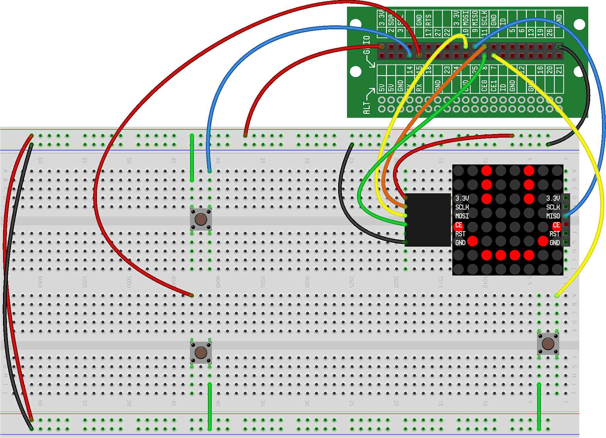

In this project, we'll build on the previous bomb detonating project by making our explosion radius configurable from the controller and also display that radius on the LED Matrix.
For this project, we'll need the LED Matrix and three buttons wired on the breadboard. For our code below, we assume the buttons are wired to GPIO12, GPIO14 and GPIO15. Here's what your breadboard should look like: 
This code is similar to the code from the previous project, except that we've added a few things:
A variable called radius that is increased or decreased
using two new up and down buttons that we've added to the hardware.
The LED Matrix displays the current explosion radius.
Here is what the code for this project should look like at this point (with new changes highlighted with arrows):
This code should be pretty self-explanatory at this point, but should also give you some ideas on how you can continue to create new and interesting games and events in the Minecraft world.
Assuming you still have your controller wired up, add this bomb code to the Minecraft controller code ( project) so that you can place a bomb while using the CREATOR Kit as a controller.
Can you add a bomb explosion sound when the detonation occurs? Note: "hit.wav" is a reasonable sound to use.
Can you make the explosion occur near, but not exactly at, the TNT position? Hint: You might want to use a random function.